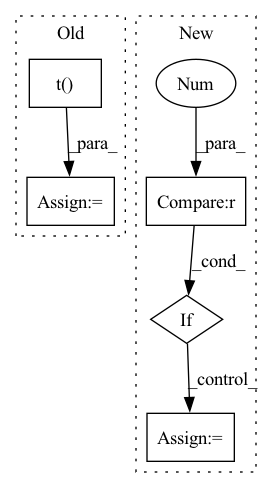

Pattern ID :29139

Before Change
bond_buckets[native_bond_idxs[1], native_bond_idxs[0]] = cutoffs.shape[0]
// find the indexes - symmetric and we dont want the diag
close_bond_idxs = ( bond_buckets < len(cutoffs) ).triu(diagonal=1)
close_bond_idxs = ( close_bond_idxs + close_bond_idxs.t() ).nonzero().t()
// merge all bonds
whole_bond_idxs = torch.cat([native_bond_idxs, close_bond_idxs], dim=-1)
// 2. ATTRS: encode bond -> attrs
After Change
bond_buckets += len(cutoffs) * torch.eye(bond_buckets.shape[0]).long()
close_bond_idxs = ( bond_buckets < len(cutoffs) ).nonzero().t()
// merge all bonds
if close_bond_idxs.shape[0] > 0:
whole_bond_idxs = torch.cat([native_bond_idxs, close_bond_idxs], dim=-1)
else:
whole_bond_idxs = native_bond_idxs
// 2. ATTRS: encode bond -> attrs
bond_vecs = x[ whole_bond_idxs[0] ] - x[ whole_bond_idxs[1] ]
In pattern: SUPERPATTERN
Frequency: 3
Non-data size: 5
Instances
Fragment ID: 85811521
Project Name: lucidrains/geometric-vector-perceptron
Commit Name: 22f9b33ad0772e693055c0076bdd5607b66fbe2d
Time: 2021-02-28
Author: ericalcaide1@gmail.com
File Name: examples/data_utils.py
M Class Name: AnonimousClass
N Class Name: AnonimousClass
M Method Name: encode_whole_bonds(5)
N Method Name: encode_whole_bonds(5)
M Parent Class:
N Parent Class:
M File Name: examples/data_utils.py
N File Name: examples/data_utils.py
M Start Line: 345
M End Line: 379
N Start Line: 339
N End Line: 378
'>
Before Change
embed = self.embed if not self.learnable_codebook else self.embed.detach()
embed = l2norm(embed)
dist = flatten @ embed.t()
embed_ind = gumbel_sample(dist, dim = -1, temperature = self.sample_codebook_temp)
embed_onehot = F.one_hot(embed_ind, self.codebook_size).type(dtype)
embed_ind = embed_ind.view(*shape[:-1])
After Change
@autocast(enabled = False)
def forward(self, x):
needs_codebook_dim = x.ndim < 4
x = x.float()
if needs_codebook_dim:
x = rearrange(x, "... -> 1 ...")
shape, dtype = x.shape, x.dtype
flatten = rearrange(x, "h ... d -> h (...) d")
flatten = l2norm(flatten)
self.init_embed_(flatten)
embed = self.embed if not self.learnable_codebook else self.embed.detach()
embed = l2norm(embed)
dist = einsum("h n d, h c d -> h n c", flatten, embed)
embed_ind = gumbel_sample(dist, dim = -1, temperature = self.sample_codebook_temp)
embed_onehot = F.one_hot(embed_ind, self.codebook_size).type(dtype)
embed_ind = embed_ind.view(*shape[:-1])
quantize = batched_embedding(embed_ind, self.embed)
if self.training:
bins = embed_onehot.sum(dim = 1)
self.all_reduce_fn(bins)
ema_inplace(self.cluster_size, bins, self.decay)
zero_mask = (bins == 0)
bins = bins.masked_fill(zero_mask, 1.)
embed_sum = einsum("h n d, h n c -> h c d", flatten, embed_onehot)
self.all_reduce_fn(embed_sum)
embed_normalized = embed_sum / rearrange(bins, "... -> ... 1")
embed_normalized = l2norm(embed_normalized)
embed_normalized = torch.where(
rearrange(zero_mask, "... -> ... 1"),
embed,
embed_normalized
)
ema_inplace(self.embed, embed_normalized, self.decay)
self.expire_codes_(x)
if needs_codebook_dim:
quantize, embed_ind = map(lambda t: rearrange(t, "1 ... -> ..."), (quantize, embed_ind))
return quantize, embed_ind
'>
Fragment ID: 85811520
Project Name: lucidrains/vector-quantize-pytorch
Commit Name: 8716f68d5549f5252d81e45651271f466d639356
Time: 2022-07-30
Author: lucidrains@gmail.com
File Name: vector_quantize_pytorch/vector_quantize_pytorch.py
M Class Name: CosineSimCodebook
N Class Name: CosineSimCodebook
M Method Name: forward(2)
N Method Name: forward(2)
M Parent Class: nn.Module
N Parent Class: nn.Module
M File Name: vector_quantize_pytorch/vector_quantize_pytorch.py
N File Name: vector_quantize_pytorch/vector_quantize_pytorch.py
M Start Line: 330
M End Line: 359
N Start Line: 397
N End Line: 448
'>
Before Change
self.init_embed_(flatten)
embed = self.embed if not self.learnable_codebook else self.embed.detach()
embed = self.embed.t()
dist = -(
flatten.pow(2).sum(1, keepdim=True)
- 2 * flatten @ embed
After Change
@autocast(enabled = False)
def forward(self, x):
needs_codebook_dim = x.ndim < 4
x = x.float()
if needs_codebook_dim:
x = rearrange(x, "... -> 1 ...")
shape, dtype = x.shape, x.dtype
flatten = rearrange(x, "h ... d -> h (...) d")
self.init_embed_(flatten)
embed = self.embed if not self.learnable_codebook else self.embed.detach()
embed = rearrange(embed, "... n d -> ... d n")
dist = -(
(flatten ** 2).sum(dim = -1, keepdim=True)
- 2 * flatten @ embed
+ (embed ** 2).sum(dim = -2, keepdim=True)
)
embed_ind = gumbel_sample(dist, dim = -1, temperature = self.sample_codebook_temp)
embed_onehot = F.one_hot(embed_ind, self.codebook_size).type(dtype)
embed_ind = embed_ind.view(*shape[:-1])
quantize = batched_embedding(embed_ind, self.embed)
if self.training:
cluster_size = embed_onehot.sum(dim = 1)
self.all_reduce_fn(cluster_size)
ema_inplace(self.cluster_size, cluster_size, self.decay)
embed_sum = einsum("h n d, h n c -> h c d", flatten, embed_onehot)
self.all_reduce_fn(embed_sum)
cluster_size = laplace_smoothing(self.cluster_size, self.codebook_size, self.eps) * self.cluster_size.sum()
embed_normalized = self.embed_avg / rearrange(cluster_size, "... -> ... 1")
self.embed.data.copy_(embed_normalized)
self.expire_codes_(x)
if needs_codebook_dim:
quantize, embed_ind = map(lambda t: rearrange(t, "1 ... -> ..."), (quantize, embed_ind))
return quantize, embed_ind
'>
Fragment ID: 85811522
Project Name: lucidrains/vector-quantize-pytorch
Commit Name: 8716f68d5549f5252d81e45651271f466d639356
Time: 2022-07-30
Author: lucidrains@gmail.com
File Name: vector_quantize_pytorch/vector_quantize_pytorch.py
M Class Name: EuclideanCodebook
N Class Name: EuclideanCodebook
M Method Name: forward(2)
N Method Name: forward(2)
M Parent Class: nn.Module
N Parent Class: nn.Module
M File Name: vector_quantize_pytorch/vector_quantize_pytorch.py
N File Name: vector_quantize_pytorch/vector_quantize_pytorch.py
M Start Line: 223
M End Line: 252
N Start Line: 264
N End Line: 310